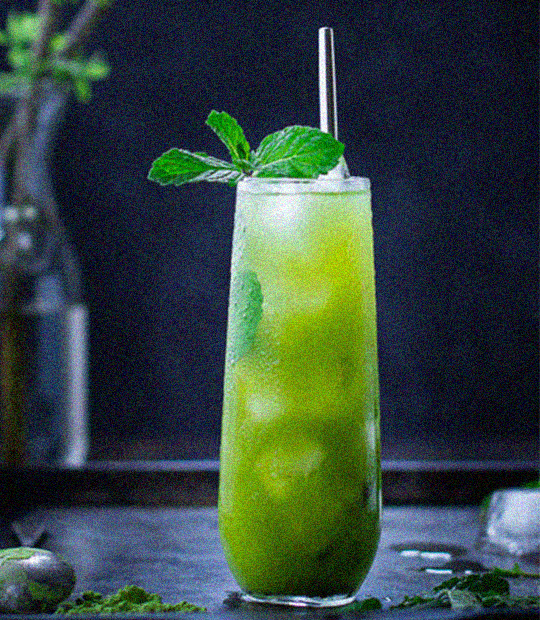

Green in light
Ingrédients pour 2 cocktails
- 2 pointes de raifort (wasabi)
- 4 cl de lime cordial
- Schweppes lemon
- 4 cl de liqueur st-germain
- 8 cl de gin
Préparation
- Frappez les ingrédients sans le schweppes, versez et complétez au schweppes Lemon.
- Servir dans un verre de type "verre à martini".